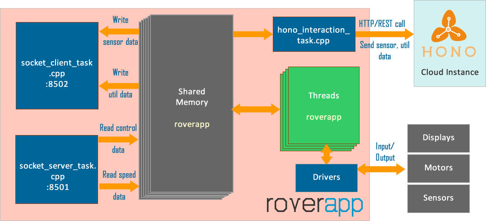

4. Roverapp¶
{kind=link}
Roverapp is an open-source C/C++ project for single board Linux computers (Raspberry Pi), especially designed for the Rover. It features multi-threaded schedulable and traceable software under GNU/Linux environment. For multi-threading, POSIX threads (Pthreads) and its synchronization implementations such as mutexes are widely used.
Roverapp complete feature list is given below:
Multi-threaded, schedulable and traceable embedded software.
Cloud communication to Hono 0.5-M9 infrastructure using REST API, using customly created hono_interaction library.
Utilized drivers for Linux modules such as bluetooth (bluetooth-dev).
I2C drivers and applications (threads) for OLED display, SRF02 ultrasonic sensor, HMC5883L magnetometer, GY-521Y accelerometer, etc.
Temperature and humidity measurement using DHT22 sensor.
Reactive implementations for TCP socket server and TCP socket client, with proper JSON formatted data for communication.
OLED display application that is able to display bluetooth, Hono cloud, ethernet, wireless interface, and internet with the help of status_library library.
OpenCV 2.4.9 utilization and image processing application (currently Traffic cone detection).
SHARP Analog Proximity measurement sensor interfacing and implementations.
SRF-02, HCSR-04, and Grove Ultrasonic sensor interfacing and implementations.
Motor driving implementations.
Timing measurement implementations with the help of timing library.
CPU core utilization measurement implementation.
Adaptive Cruise Control behavior implementation.
Parking behavior implementation.
Booth mode implementations.
Implementations for bluetooth-based driving from Android phones.
4.1. Roverapp Architecture¶
{kind=link}
Note
Rover-app source code is maintained under the following repository:
4.2. Using Roverapp¶
Note
In order to see how Roverapp is installed and compiled, please see Roverapp Installation section.
4.2.1. Running Roverapp¶
After installation, Roverapp can be run by the following command from the project root’s build/bin directory:
1 | sudo ./roverapp
|
4.2.2. Roverapp API¶
Note
Rover API Documentation is provided in https://app4mc-rover.github.io/rover-app.